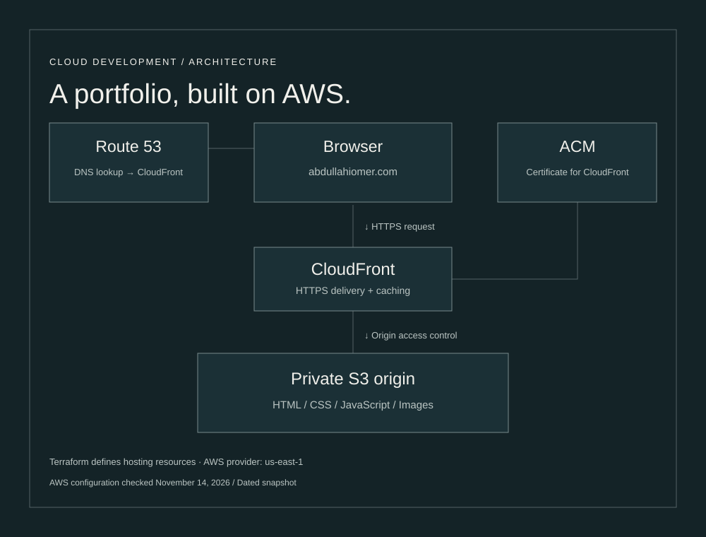
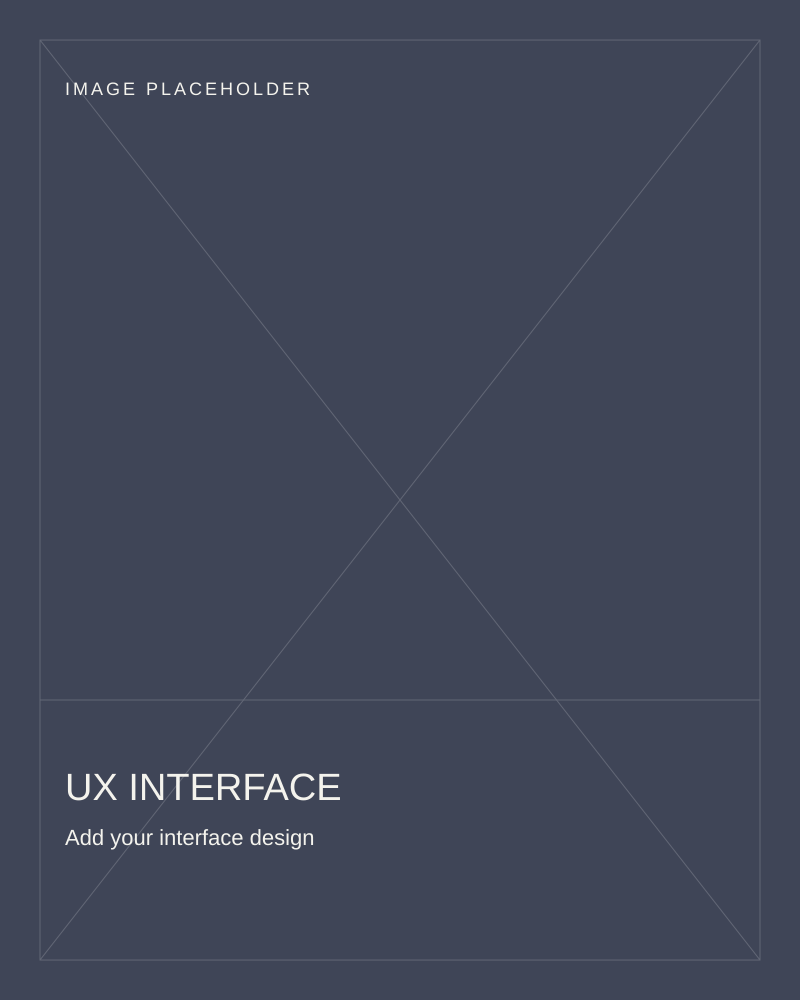
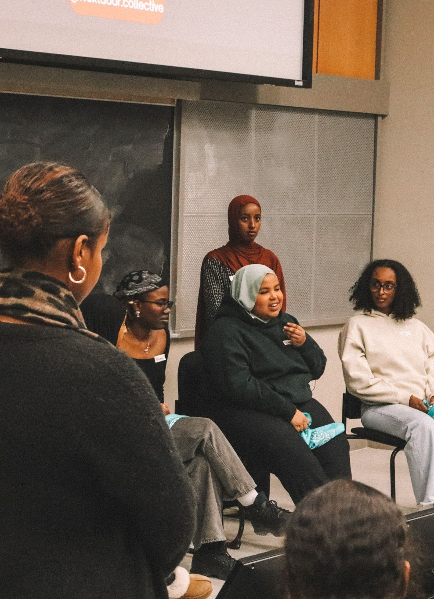

AbdullahiOmer
I’m studying Cloud Development at Algonquin College. My projects include this AWS-hosted portfolio and a Power BI dashboard I worked on with my team.
Early-career cloud focus.Infrastructure, delivery and operations.
01 / Selected work
Cloud infrastructure and applications.
Project decisions, evidence and lessons.
02 / Skills
Technical
skills
- Cloud infrastructure
- I host this portfolio in a private Amazon S3 bucket. CloudFront serves it over HTTPS, and Route 53 connects the domain.
- Infrastructure as code
- Terraform describes the hosting, deployment access, and monitoring resources. I still need to reconcile the state with the live hosting resources.
- Delivery & operations
- GitHub Actions tests the same release artifact it deploys and uses OIDC to access AWS. CloudWatch provides monitoring, and a guarded workflow can restore a previous release.
- Data & reporting
- My team used Azure Blob Storage, Data Factory, and Azure SQL for a retail data pipeline. I worked on the Power BI report and used SQL to compare financial totals.
- Application development
- HTML, CSS and JavaScript power this portfolio.
03 / Community
One goal. One purpose.
Phase 1
Founder — Operations
Phase 1 is an Ottawa-based development hub for Black youth. Through creative learning, practical skills and mentorship, it helps young people explore their interests and prepare for education and careers.
- My role
- I’m one of Phase 1’s founders, with a focus on operations. The organization’s team page lists my role alongside its other founders and staff.
- Programs
- Offerings include From Our Lens for videography, Clicks2Cash for marketing, and Lead & Launch for project management. The wider program areas cover creative skills, education, personal growth, leadership and community engagement. Explore the programs ↗
- Community & events
- Published highlights include networking, field trips and skills workshops, alongside Feed the Fasting outreach and mental health workshops with Ottawa Public Health. View event highlights ↗
six programs
opportunity after joining
Organization-wide figures reported on Phase 1’s website, reviewed November 14, 2026.
Visit Phase 1 Ottawa ↗04 / About
A design
mindset.
A cloud
focus.
Industrial design taught me to start with who will use what I build. I bring that habit to cloud development. When I explain this portfolio’s hosting, for example, I start at the browser and trace how the page gets from S3 to the visitor.
- Algonquin College
- Cloud Development / Current studies
- Carleton University
- Bachelor of Industrial Design
Areas of practice & study
Cloud development · AWS · Terraform · HTML, CSS & JavaScript · UX · Industrial design
05 / Contact
Let’s connect.
For early-career cloud opportunities,
project conversations and collaboration.